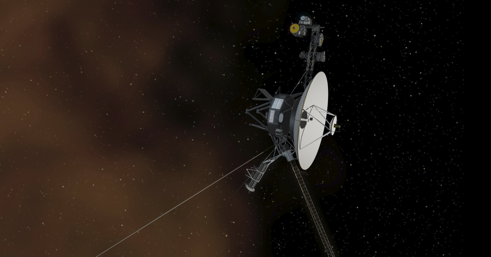

This artist's concept shows the
Voyager 1 spacecraft entering
the space between stars.
Voyager - Mission Timeline
-
Summer 1965 Calculations reveal it is
possible for a spacecraft launched
in the late 1970's to visit all four giant outer
planets, using the gravity of each planet to swing
the spacecraft on to the next. This alignment occurs
once every 176 years.
-
July 1, 1972 "Mariner Jupiter/Saturn
1977", the name of the mission before it became Voyager,
is approved by NASA, with day-to-day management by the
Jet Propulsion Laboratory in Pasadena, California.
The original palns commit only to flybys of Jupiter and
Saturn and build upon the heritage of earlier Mariner
spacecraft that flew by Venus, Mars and Mercury.
-
December 13-15, 1972 The Mariner
Jupiter/Saturn 1977 project (the mission's name before
Voyager) holds its first science steering group meeting
at the Jet Propulsion Laboratory.
-
March 1977 The Mariner Jupiter/Saturn 1977
project is renamed Voyager.
-
August 20, 1977 Voyager 2 launches from
NASA's Kennedy Space Center. It is named Voyager 2
because, even though it launches first, Voyager 2 is
planned to reach Jupiter and Saturn after Voyager 1.
-
September 5, 1977 Voyager 1 launches from
NASA's Kennedy Space Center. It is named Voyager 1 even
though it launches second beacuse Voyager 1 will reach
Jupiter and Saturn first.
-
September 6, 1977 Voyager 1 returns first
spacecraft photo of Earth and the Moon.
-
March 5, 1979 Voyager 1 makes its closest
approach to Jupiter. Highlights of the encounter include
the discoveries of the first active volcanoes spotted
beyond Earth at the moon Io (discovered on March 9 in
optical navigation images), the Jovian ring system and
two moons (Thebe and Metis). Scientists also find that
the Great Red Spot is a huge cyclone-like storm,
Ganymede has grooved terrain (suggesting an early
history of tectonic activity), and Jupiter has
lightning (the first time lightning is detected at a
world beyond Earth). The spacecraft encounter reveals
other strange phenomena connected to Io: Ions stripped
from its surface create a torus (or doughnut) around
Jupiter and inflate the planet's magnetic field; and Io
acts like an electric generator in Jupiter's magnetic
field, sending 5 million amperes of current along the
magnetic field to
Jupiter.
-
July 9, 1979 Voyager 2 makes its closest
approach to Jupiter. Highlights of the encounter include
the first images of Jupiter's ring system; discovery of
a third moon (Adrastea); and a close approach to the
moon Europa, which reveals intersecting linear features
that suggest cracks in ice over a liquid water ocean.
Voyager 2 observes that six of the Io volcanoes erupting
during Voyager 1's encounter are still erupting --
meaning their active periods last at least several
months, and that Io's volcanoes can turn on and off.
-
November 9, 1980 Voyager 1 makes its
closest approach to Saturn’s largest moon Titan and
Saturn itself. Highlights from the Saturn encounter
include the discovery of three moons (Atlas, Prometheus
and Pandora). The discovery of Prometheus and Pandora
around Saturn’s F ring confirms scientists’ theory that
shepherding moons have to exist around narrow rings to
keep ring material in line. The kinked, multi-stranded
nature of Saturn’s F ring is also seen for the first
time. Other highlights include the discovery of ghostly
features in Saturn’s rings that resemble broad spokes
in a wheel and views of the surprisingly bright surface
of Enceladus. Data gathered from the Titan encounter
show a thick, Earth-like atmosphere -- the first
nitrogen-rich atmosphere found beyond our home planet --
and suggest the possibility of seas of liquid methane
and ethane on Titan’s surface. After the Saturn
encounter, Voyager 1 begins its trip out of the solar
system, heading upwards out of the plane of the planets.
-
August 25, 1981 Voyager 2 makes its
closest approach to Saturn. Highlights include close
encounters with several of Saturn’s icy moons (including
Tethys, Iapetus and some of the moons discovered on
Voyager 1’s encounter) and images of the half-young,
half-old terrain of Enceladus, which suggests it might
be geologically active. Images of the north pole of
Saturn from this encounter are later stitched together
to reveal a hexagonal-shaped weather feature circulating
around the pole.
-
January 24, 1986 - Voyager 2 makes its
closest approach to Uranus, the first time the seventh
planet from the Sun has been seen up-close. Upon
approach, Voyager 2 images reveal 11 new moons
(Puck, Juliet, Portia, Cressida, Desdemona, Rosalind,
Belinda, Perdita, Cordelia, Ophelia and Bianca).
Bewildering images of the moon Miranda show that it
likely experienced periods of heating from the tug of
other Uranian moons. Scientists also learn that Uranus’s
magnetic field is tilted, so that the poles of its
magnetic field are closer to the equator, unlike the
Earth where magnetic pole and the rotational poles are
nearly aligned. Voyager 2 is the first to image Uranus’s
very dark rings and to detect temperatures as
low as minus 353 degrees (59 Kelvin), which makes Uranus
the coldest planet in our solar system.
This encounter also marks the first time NASA’s Deep
Space Network, which enables Earth to communicate
with spacecraft beyond the moon, arrays antennas
together to improve our ability to capture the weak
radio signals from very distant spacecraft.
-
August 1987 NASA’s Deep Space Network
completes the expansion of its big dishes at all three
communications complexes (Goldstone, California; Madrid,
Spain; and Canberra, Australia) from 64 meters to 70
meters wide, improving our ability to capture the weak
radio signals Voyager is later expected to send back
from Neptune.
-
August 25, 1989 Voyager 2 makes its
closest approach to Neptune, making it the first
spacecraft to observe Neptune up close and the first to
visit four planets beyond Earth. Highlights from the
encounter include the discovery of six new moons in its
images (Despina, Galatea, Larissa, Proteus, Naiad and
Thalassa), the first images of Neptune’s rings, and the
discovery of a huge, counter-clockwise rotating storm in
Neptune’s southern hemisphere, dubbed “The Great Dark
Spot.” Five hours after the closest approach to Neptune,
Voyager 2 gave us our first close-up views of Triton, a
bitterly cold, fractured moon with terrain the texture
of a cantaloupe rind and geysers erupting from pinkish-
hued nitrogen ice that forms the moon’s south polar cap.
After the Neptune encounter, Voyager 2 begins its trip
out of the solar system, below the plane of the planets.
-
October 10 & December 5, 1989 Engineers
turn off Voyager 2’s wide-angle and narrow-angle cameras
because they want to use the power, computer memory and
data rate for other instruments that collect key data on
the solar wind and interstellar space. The spacecraft
will never fly close enough to any astronomical object
to take images again.
-
February 14, 1990 At a distance of about 4
billion miles (6 billion kilometers) from the sun,
Voyager 1 takes the last images of the mission: the
“Solar System Family Portrait.” It is the only series of
images that captures Venus, Earth, Jupiter, Saturn,
Uranus and Neptune arrayed about the sun. Earth is
captured as a tiny speck in a beam of scattered sunlight
, inspiring Carl Sagan to think about the fragility and
uniqueness of our home planet, “a pale blue dot.” After
the images are transmitted from the spacecraft in real-
time on this day, engineers turn off Voyager 1’s cameras
because they want to use the power, computer memory and
data rate for other instruments that collect key data on
the solar wind and interstellar space. The spacecraft
will never fly close enough to any astronomical object
to take images again.
-
February 17, 1998 Voyager 1 passes the
distance of Pioneer 10 to become the farthest human-
made object from Earth in space.
-
December 16, 2004 Voyager 1 crosses the
termination shock, where the solar wind abruptly slows
down and heats up as it encounters the interstellar
wind. The termination shock marks the inner boundary of
heliosheath, which is the turbulent outer layer of the
bubble the Sun blows itself and all of the planets.
Unfortunately, on the day Voyager 1 crosses the shock,
ground antennas are not scheduled to listen for the data
the spacecraft is transmitting.
-
August 30, 2007 Voyager 2 crosses the
termination shock into the heliosheath, the outer layer
of the bubble the Sun blows around itself and all of the
planets. This time, antennas at Earth are listening for
Voyager 2’s data transmissions and scientists are able
to analyze the first measurements of the passage through
the termination shock.
-
August 12, 2012 Voyager 2 becomes NASA's
longest-operating mission, breaking the previous record
for continuous operation by Pioneer 6 (12,758 days of
operation starting on Dec. 16, 1965).
-
August 25, 2012 Voyager 1 enters
interstellar space, passing beyond the heliopause, which
is the boundary between our solar bubble and the matter
ejected by explosions of other stars. It is the first
time a human-made object crosses the threshold of
interstellar space. Since the spacecraft is continually
collecting data, Voyager detects the full intensity of
cosmic rays in interstellar space for the first time on
this day and also makes the first measurement of the
interstellar magnetic field wrapped around the outside
of the heliosheath. The crossing itself, however,
is not confirmed until April 9, 2013.
-
April 9, 2013 Voyager 1 makes the first
measurement of the density of the interstellar medium,
when a wave caused by a coronal mass ejection from the
Sun reaches Voyager 1 and causes the plasma in
interstellar space to ring. The high pitch of the
ringing indicates the density of the plasma surrounding
Voyager 1 is more than 40 times higher than previously
measured, confirming the spacecraft is in the
interstellar space and has been since Aug. 25, 2012.
-
November 5, 2018 For the second time in
history, a human-made object reaches the space between
the stars. NASA's Voyager 2 probe exits the heliosphere
– the protective bubble of particles and magnetic fields
created by the Sun.